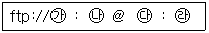
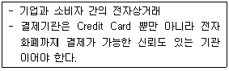
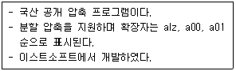
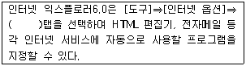

인터넷정보관리사-2급 (2008-11-16 기출문제)
1과목: 인터넷의 이해
1. 인터넷에 관한 설명으로 틀린 것은?
- 미 국방성의 ARPANET에서 유래되었다.
- 인터넷은 전 세계 누구나 정보를 쉽고 빠르게 교환할 수 있는 개방형 구조이다.
- 사용할 수 있는 운영체제는 윈도우즈와 리눅스 계열로 제한되어 있다.
- 중앙에 어떠한 통제 기구도 없다.
(정답률: 60%)

2. WWW에 관한 설명으로 가장 적절하지 않은 것은?
- 하이퍼링크된 문서도 제공할 수 있다.
- Windows World Web의 약자이다.
- 웹 브라우저를 통해 다양한 형태의 멀티미디어 파일을 지원한다.
- 클라이언트/서버 구조로 이루어진 분산 하이퍼텍스트 시스템이다.
(정답률: 63%)
3. IETF에서 출판을 담당하며 인터넷과 관련된 상세한 절차와 표준 규격을 제시하는 해설요구 문서를 뜻하는 것은?
- FYI
- IRG
- FAQ
- RFC
(정답률: 42%)
4. IAB 하부에 있는 조직으로, 미국 정부와의 계약하에 인터넷 서비스 공급자들의 IP주소 할당 업무를 감시해온 기구는?
- IANA
- IETF
- ISOC
- IRTF
(정답률: 36%)
5. 인터넷 주소체계에 대한 설명으로 틀린 것은?
- IP주소는 인터넷에 연결된 컴퓨터에 부여되는 숫자로 된 고유의 주소를 뜻한다.
- IPv6는 256bit로 이루어져 있다.
- D클래스의 경우 멀티캐스트용으로 예약되어 있다.
- IPv4는 10진수 숫자로 표기된다.
(정답률: 50%)
6. 영문 도메인 구성에 대한 설명으로 틀린 것은?
- 도메인에 언더바(_)의 기호를 사용할 수 없다.
- 공백(space)은 허용하지 않는다.
- 전세계적으로 중복되지 않는 고유한 주소로 사용된다.
- 영문자의 대ㆍ소문자 구별이 있다.
(정답률: 55%)
7. 해외 도메인 구조에서 국가별 최상위 도메인 연결이 적합하지 않은 것은?
- jp : 일본
- de : 독일
- en : 영국
- cn : 중국
(정답률: 55%)
8. 인트라넷(Intranet)에 대한 설명으로 틀린 것은?
- 특정 사용자 그룹을 위한 네트워크이다.
- 인터넷 기술과는 무관하며 장소의 제약을 받는다.
- 내부 정보의 외부 유출을 막기 위해 방화벽을 설치할 수 있다.
- 회사의 정보나 자원을 직원들 간에 서로 공유하기 위한 조직 내부의 네트워크이다.
(정답률: 64%)
9. 도메인 이름의 선정 원칙에 따른 도메인 이름으로 가장 부적당한 것은?
- tomato.co.kr
- julian-han.net
- 123k2bsky.or.kr
- sunshine_moon.com
(정답률: 42%)
10. 전자메일을 발송(Outgoing)하기 위한 표준 프로토콜은?
- POP
- SMTP
- IMAP
- FTP
(정답률: 40%)
11. 전자우편 메시지의 헤더를 구성하는 요소에 해당되지 않는 것은?
- Signature
- From
- Date
- Subject
(정답률: 67%)
12. FTP 명령어가 틀린 것은?
- mget : 여러 개의 파일을 원격 시스템에서 다운로드
- mput : 여러 개의 파일을 원격 시스템으로 업로드
- hash : 사용자 컴퓨터 디렉토리 변경
- quit : 연결된 호스트와 접속을 종료하고 shell 상태로 복귀
(정답률: 67%)
13. FTP 프로그램을 사용하지 않고 웹 브라우저에서 FTP에 접속하려고 한다. 아래와 같을 때, (나)에 들어가야 할 내용은?

- ftp 호스트 이름
- 사용자ID
- 비밀번호
- 포트번호
(정답률: 36%)
14. 유즈넷을 이용하기 위해 지정해 주어야 하는 서버의 이름과 해당 서버의 Well-Known 포트 번호가 맞게 짝지어진 것은?
- NNTP 서버 - 110번
- NNTP 서버 - 119번
- Telnet 서버 - 21번
- Gopher 서버 - 70번
(정답률: 34%)
15. 유즈넷 뉴스그룹 중 han.sci.bio라는 이름을 가진 토론그룹이 있다. 이 그룹에서 토론되는 내용으로 가장 적절한 것은?
- 한글 뉴스그룹으로, 사회적 관심사 중 농업에 관련된 내용
- 한글 뉴스그룹으로, 과학분야 중 생명공학에 관련된 내용
- 한글 뉴스그룹으로, 테스트하기 위한 글을 등록하는 곳
- 한글 뉴스그룹으로, 정치분야 중 인권에 관련된 내용
(정답률: 69%)
16. 채팅 프로그램이 아닌 것은?
- MSN Messenger
- NateOn
- Buddy Buddy
- 알약
(정답률: 73%)
17. 채팅 관련 용어 중, 글자를 타이핑하는 시간을 줄이고 대화의 속도를 지연시키지 않기 위해 메시지나 채팅에서 약어로 표현하는 문자는?
- 두문자어
- 아바타
- 이모티콘
- 아스키
(정답률: 74%)
18. 다음에서 설명하는 전자상거래의 유형은?

- BtoC
- CtoC
- BtoG
- GtoB
(정답률: 59%)
19. 전자상거래 시장의 특징으로 볼 수 없는 것은?
- 중간유통단계를 최소화하여 홍보 및 재비용이 절감된다.
- 중개인이 불필요한 완전시장이다.
- 중개인의 역할이 축소되거나 없다.
- 시간과 공간의 제약이 따른다.
(정답률: 73%)
20. 저작자의 권리와 이에 인접하는 권리를 보호하고 저작물의 공정한 이용을 도모함으로써 문화의 향상발전에 이바지함을 목적으로 하는 법은?
- 통신비밀보호법
- 정보통신윤리강령
- 컴퓨터프로그램보호법
- 저작권법
(정답률: 75%)
21. 컴퓨터프로그램보호법에서 정의하는 용어에 대한 설명으로 틀린 것은?
- 배포 : 원프로그램 또는 그 복제물을 공중에게 대가를 받거나 받지 아니하고 양도 또는 대여하는 행위.
- 공표 : 프로그램을 발행하거나 이를 공중(公衆)에게 제시하는 행위.
- 복제 : 원 프로그램의 전부 또는 상당부분을 이용하여 새로운 프로그램을 창작하는 것.
- 발행 : 공중의 수요를 충족할 수 있도록 프로그램을 복제하여 배포하는 것.
(정답률: 알수없음)
22. 저작권을 침해하는 행위에 해당되는 것은?
- 시험문제로의 복제
- 재판절차 등에서의 복제
- 번역을 위한 이용
- 사설학원에서 영리목적의 복제
(정답률: 46%)
23. 통신비밀보호법에 대한 설명으로 틀린 것은?
- 공개되지 아니한 타인간의 대화는 청취할 수 있으나, 녹음 및 저장할 수는 없다.
- 통신은 우편물 및 전기통신을 포함한다.
- 원칙적으로 우편물은 검열할 수 없다.
- 검열 및 감청은 범죄수사 및 국가안전보장을 위한 보충적 수단으로 이용할 수 있다.
(정답률: 71%)
24. 본문의 내용과는 상관없는 악의적인 리플을 반복해서 달아놓는 사람을 무엇이라고 하는가?
- 리플러
- 악플러
- 크래커
- 스패머
(정답률: 75%)
25. 유즈넷을 이용할 때의 올바른 네티켓으로 가장 거리가 먼 것은?
- 다른 사람들의 질문에 관심을 가져 최대한 도와준다.
- 연습글은 test 뉴스그룹에 올리도록 한다.
- 게시물을 올리기 전에 유사한 글이 있는지 살펴본다.
- 동일한 질문을 여러 뉴스그룹에 모두 올려 빠른 답변을 기다린다.
(정답률: 69%)
26. 올바른 네티켓으로 가장 부적합한 것은?
- 현실 생활과는 전혀 다른 윤리와 언어 자세를 취한다.
- 논쟁을 할 때 감정을 절제한다.
- 자신의 권력을 남용하지 않는다.
- 상대방의 시간과 인격을 존중한다.
(정답률: 67%)
27. 개인용 컴퓨터에서 사용되는 장치 중, 입력장치가 아닌 것은?
- 키보드
- 모니터
- 마우스
- 스캐너
(정답률: 70%)
28. 외부로부터 입력되는 일련의 데이터들을 모아 두었다가 일정한 시간이 되면 이들 작업들을 미리 정해진 순서에 따라 차례대로 처리하는 방식은?
- 일괄처리
- 다중프로그래밍
- 시분할처리
- 실시간처리
(정답률: 48%)
29. 컴퓨터 바이러스에 대한 설명으로 틀린 것은?
- 일부 바이러스는 자기 복제가 가능하다.
- 바이러스에 감염되면 시스템이 동작하지 않을 수가 있다.
- 문서파일에는 바이러스가 절대 감염되지 않는다.
- 바이러스에 감염되는 데이터가 손상되는 경우도 있다.
(정답률: 88%)
30. 아래에서 설명하는 압축 프로그램은?

- 밤톨이
- 알집
- winzip
- winrar
(정답률: 50%)
31. ADSL에 대한 설명으로 틀린 것은?
- 업로드 속도가 다운로드 속도보다 느리다.
- 전화와 인터넷을 동시에 사용할 수 있다.
- 기존의 전화선을 이용할 수 없다.
- VOD 등 단방향 서비스에 유용하다.
(정답률: 47%)
32. 전용선과 전송속도가 바르게 연결된 것은?
- T1 : 2.048Mbps
- E1 : 3.048Mbps
- T2 : 6Mbps
- T3 : 50Mbps
(정답률: 32%)
33. ISDN의 채널 중 B채널의 전송 속도는?
- 16kbps
- 32kbps
- 64kbps
- 128kbps
(정답률: 59%)
2과목: 인터넷 자원 탐색
34. 전용선을 이용한 인터넷 접속 시 필요한 장비로 거리가 먼 것은?
- NIC
- Router
- DSU
- TA
(정답률: 37%)
35. 케이블TV망을 이용한 인터넷 접속에 대한 설명으로 틀린 것은?
- 아날로그 전송방식이다.
- 인터넷을 이용하려면 반드시 별도의 인터넷 로그인 과정을 거쳐야한다.
- 전화선과는 상관없다.
- 24시간 인터넷에 연결되어 있다.
(정답률: 37%)
36. Telnet과 HTTP의 Well-Known 포트번호를 합산하면 얼마인가?
- 88
- 107
- 103
- 119
(정답률: 50%)
37. 프록시 서버에 대한 설명으로 가장 적절하지 않은 것은?
- 데이터 캐시 기능 제공
- 전자우편 서버 기능
- 클라이언트/서버 역할 동시수행
- 방화벽 기능
(정답률: 62%)
38. CGI에 대한 설명으로 틀린 것은?
- POST 방식과 GET방식이 있다.
- 웹 서버에서 수행되는 외부 응용 프로그램과 연결시켜주는 기능을 한다.
- 3차원 정보를 전문으로 표현하기 위한 언어이다.
- Common Gateway Interface의 약자이다.
(정답률: 34%)
39. URL의 구성에 포함되지 않는 것은?
- 사용하는 인터넷 윈도우즈 버전
- 인터넷 서비스 종류
- 접근할 포트번호
- 해당 서버 내의 추가적인 경로
(정답률: 54%)
40. 일반적인 HTML 문서의 시작과 끝을 나타내는 태그는?
- <html></html>
- <head></head>
- <body></body>
- <title></title>
(정답률: 62%)
41. HTML의 태그 중 이미 방문했던 하이퍼링크의 색을 지정하는 것은?
- bgcolor
- alink
- vlink
- link
(정답률: 알수없음)
42. 반복하여 사용하여도 그 결과가 달라지지 않는 것은?
- <br><br><br>
- &&&
- <small><small>..</small></small>
-
(정답률: 10%)
43. 프레임을 사용할 때 하이퍼링크 시킨 문서가 기존의 프레임 구조를 완전히 벗어나, 현재의 프레임 구조로 들어오기 이전의 한 단계 상위 페이지로 올라가도록 할 때 사용하는 속성은?
- target=_self
- target=_top
- target=_blank
- target=_parent
(정답률: 알수없음)
44. 홈페이지 저작도구 중, 위지윅(WYSIWYG) 기반이 아닌 것은?
- 메모장
- 나모 웹에디터
- 드림위버
- 프론트 페이지
(정답률: 알수없음)
45. 다음 중 멀티미디어 개념 설명으로 잘못된 것은?
- 멀티미디어란 문자, 그림, 이미지 등의 다양한 형태의 정보를 하나의 정보로 통합한 것이다.
- 멀티미디어 응용분야는 인터넷 방송만 가능하며 현재는 극히 제한적이다.
- 여러 종류의 미디어를 이용하여 정보가 표현되는 모든 것을 멀티미디어라고 한다.
- 멀티미디어 데이터는 저장 및 전송을 위하여 압축 알고리즘을 사용한다.
(정답률: 77%)
46. 멀티미디어의 실현배경으로 보기 가장 어려운 것은?
- 고성능 컴퓨터 출현
- 효과적인 인터페이스 기술 발달
- 아날로그 기술의 발달
- 압축 기술의 발달
(정답률: 62%)
47. 가상현실에 대한 설명으로 틀린 것은?
- 가상의 세계에서 눈과 귀를 통해 보고 들을 수 있다.
- 가상현실을 구성하기 위해서는 빠른 그래픽 속도가 필요하다.
- HMD는 사용자의 머리 움직임 등과 같은 이동 정보를 컴퓨터 시스템에 전달할 수 없다.
- 시뮬레이션과 달리 직접 그 안에 들어가 직접적인 체험을 할 수 있다.
(정답률: 알수없음)
48. 이미지 파일의 확장자가 아닌 것은?
- BMP
- JPEG
- GIF
- ASF
(정답률: 70%)
49. 3차원 그래픽에서 화면에 표시되는 3차원 물체의 각 면에 색깔이나 음영 효과를 넣어 화상의 입체감과 사실감을 나타내는 방법은?
- 렌더링
- 디더링
- 메조틴트
- 모델링
(정답률: 36%)
50. 확장자가 PDF인 파일을 열어보는데 가장 적합한 프로그램은?
- Windows Media Player
- Acrobat Reader
- ShockWave Flash
- Real Player
(정답률: 47%)
51. Apple사가 개발한 것으로, 전용 포맷인 MOV 이외에 PNG, AU 등 여러 동영상 파일을 재생할 수 있는 것은?
- Winamp
- Cosmo Player
- Gom Player
- QuickTime
(정답률: 알수없음)
52. 텍스트, 그래픽, 비디오 등 멀티미디어 저작물의 불법 복제를 막고 저작권자를 보호하기 위한 디지털 컨텐츠 저작권 보호 기술은?
- 디지털 워터마크
- 전자서명
- 인증서
- 방화벽
(정답률: 57%)
53. 체코의 대학생인 마이클 폴락이 개발한 도스(DOS)기반 웹 브라우저는?
- Lynx
- Arachne
- Cello
- Samba
(정답률: 17%)
54. 인터넷 익스플로러 6.0에서 현재 페이지를 즐겨찾기 목록에 추가하기 위한 단축키는?
- Ctrl + S
- Ctrl + A
- Ctrl + D
- Ctrl + X
(정답률: 46%)
55. 인터넷 익스플로러 6.0의 화면 구성 요소 중 현재 브라우저에서 보여지는 문서의 제목을 나타내 주는 곳은?
- 본문 영역
- 상태 표시줄
- 제목 표시줄
- 주소 표시줄
(정답률: 50%)
56. 인터넷 익스플로러 6.0의 [도움말]의 하위 메뉴에 대한 설명으로 틀린 것은?
- 목차 및 색인 : 인터넷 익스플로러의 버전과 암호화 수준을 검색해 볼 수 있다.
- 잠깐만 : 현재 상황에서 가장 알맞은 도움말을 화면 하단에 제공한다.
- Netscape 사용자 : 기존에 네스케이프 사용자를 위한 도움말을 제공한다
- 온라인 지원 : 인터넷 익스플로러와 관련된 패치 파일을 다운받는다.
(정답률: 22%)
57. 다음 ( )안에 들어갈 내용으로 알맞은 것은?

- 사용자
- 프로그램
- 일반
- 고급
(정답률: 알수없음)
58. 인터넷 사용자의 모니터 크기가 작아서 화면이 좁아 보이는데, 화면 위에 도구 아이콘만 나타나게 하여 인터넷 익스플로러6.0의 창을 넓게 보기 위해 사용하는 단축키는?
- F1
- F5
- F10
- F11
(정답률: 59%)
59. 인터넷 익스플로러 6.0의 자동완성 기능에 대한 설명으로 틀린 것은?
- 자동완성 사용대상은 웹 주소, 폼, 폼에 사용할 사용자 이름과 암호이다.
- 이전에 입력된 내용에서 첫 글자가 같으면 자동으로 전체를 완성시켜 보여준다.
- 웹 주소 항목은 [도구]⇒[인터넷옵션]⇒[개인정보]에서 지울 수 있다.
- [도구]⇒[인터넷옵션]⇒[내용]에서 설정할 수 있다.
(정답률: 47%)
60. 인터넷 익스플로러 6.0에서 [인터넷 옵션]⇒[고급]에 있는 항목이 아닌 것은?
- 그림 표시
- 모든 스크립트 오류에 관련된 알림 표시
- HTTP 오류 메시지 표시
- 텍스트 크기
(정답률: 14%)
61. 인터넷 익스플로러 6.0의 [파일]⇒[속성]에서 확인할 수 없는 사항은?
- 수정한 날짜
- URL 주소
- 페이지 소스
- 만든 날짜
(정답률: 50%)
62. 인터넷 익스플로러 6.0에서 이전에 방문한 적이 있던 홈페이지를 인터넷에 연결하지 않은 상태에서 볼 수 있도록 하는 기능을 무엇이라 하는가?
- 오프라인
- 새로고침
- 인코딩
- 연결
(정답률: 67%)
63. 검색엔진의 구성요소인 로봇에 대한 설명으로 가장 적절하지 않은 것은?
- 자료 수집 기능을 한다.
- 인덱싱하는 내용과 전략은 모든 로봇이 완전 동일하다.
- 가장 먼저 인덱싱하는 것은 웹페이지의 제목 등 몇 개 주요 문장만을 인덱싱한다.
- 네트워크를 돌아다니며 트래픽을 발생시킬 수 있으며, 속도가 느려지게 할 수 있다.
(정답률: 62%)
64. 다음 메타 태그가 의미하는 것으로 가장 알맞은 것은?
- 홈페이지의 내용이 새롭게 바뀌었다.
- 사이트 도메인 등록을 하고 있다.
- 검색엔진 로봇의 접근을 배제한다.
- 웹 페이지의 인덱스 처리가 부족하다.
(정답률: 67%)
65. 검색엔진의 구성요소 중 로봇이 수집하여 정리한 내용을 저장하고 있는 거대한 도서관을 일컫는 용어는?
- 크롤러(Crawler)
- 에이전트(Agent)
- 색인기(Indexer)
- 스쿠터(Scooter)
(정답률: 알수없음)
66. 자체적으로 데이터베이스를 구축하지 않는 검색엔진으로, 입력된 키워드를 가지고 여러개의 검색엔진을 검색하여 검색된 결과만을 사용자에게 보여주는 것은?
- 주제별 검색엔진
- 하이브리드형 검색엔진
- 단어별 검색엔진
- 메타 검색엔진
(정답률: 59%)
3과목: 인터넷 윤리
67. 검색엔진을 이용해서 ‘최신유행’이라는 단어로 검색된 정보가 500개이고 이중 200개만 적합한 정보로 판정되었다면 이 검색엔진의 정도율은?
- 30%
- 40%
- 45%
- 50%
(정답률: 65%)
68. 국내에서 개발된 검색엔진으로만 짝지어진 것은?
- 네이버, 야후
- 엠파스, 파란
- 야후, 익사이트
- 다음, 알타비스타
(정답률: 40%)
69. 정보검색에 관련된 용어 중 Leakage에 대한 설명은?
- 정보의 검색결과에서 검색되었어야 함에도 불구하고 부적절한 키워드 선정으로 빠져 버린 누락된 정보
- 검색어로 사용되는 단어의 유의어, 동의어 등을 나타내주는 용어사전
- 키워드로 사용된 경우에 무시해 버리는 단어나 문자열
- 정보검색 결과에서 불필요하게 검색된 정보
(정답률: 60%)
70. 효율적인 정보검색과 관련된 설명으로 가장 거리가 먼 것은?
- 검색엔진에서 제공하는 검색관련 도움말을 확인한다.
- 특정 키워드를 선정하기 어려울 경우 자연어 검색을 한다.
- 검색하고자 하는 정보의 종류에 맞는 검색 엔진을 사용한다.
- 어두와 어미 변화가 다양한 단어를 검색할 경우에는 구문검색이 가장 적합하다.
(정답률: 46%)
71. 검색어에 대한 질문/답변의 내용을 보여주는 ‘지식서비스’를 제공하지 않는 사이트는?
- 익사이트
- 야후코리아
- 엠파스
- 네이버
(정답률: 34%)
72. 엠파스의 특징으로 올바른 것은?
- NHN에서 개발ㆍ운영하고 있다.
- 검색어와 가장 일치하는 것을 검색결과 최하위에 둔다.
- 설문&투표 등의 랭킹 서비스를 운영하고 있다.
- 꾸러기라는 어린이 전용 사이트를 서비스하고 있다.
(정답률: 30%)
73. 검색엔진 구글에 대한 설명으로 틀린 것은?
- ‘I'm Feeling Lucky’ 기능을 통해 검색하는 내용과 밀접한 연관이 있는 홈페이지를 먼저 보여준다.
- 모든 검색어에 대해 기본값으로 and 연산을 실행한다.
- 데자(Deja)를 흡수하여 뉴스그룹 검색 서비스를 제공하고 있다.
- 검색어가 영어일 때는 대ㆍ소문자를 구별한다.
(정답률: 10%)
74. 인터넷 광고에 대한 설명으로 올바른 것은?
- 고객의 반응을 파악하기 힘들다.
- 특정 계층에 효율적으로 광고할 수 있다.
- 멀티미디어 정보의 제공은 불가능하다.
- 광고 수정이 불가능하다.
(정답률: 62%)
75. 웹 메일에 대한 설명으로 틀린 것은?
- 인터넷이 연결된 곳이라면 어디서나 사용이 가능하다.
- 별도의 환경설정이 필요치 않아 초보자도 쉽게 사용할 수 있다.
- 파일을 첨부하여 전자우편을 발송할 수 있다.
- 윈도우즈 계열의 운영체제에서만 사용이 가능하다.
(정답률: 44%)
76. 미국의 업종별 전화번호를 의미하지만, 인터넷 사이트에서는 사이트 목록을 분야별로 정리해 놓은 것을 뜻하는 용어는?
- Search Page
- White Page
- People Page
- Yellow Page
(정답률: 30%)
77. 정보원의 종류 중 2차 정보는 어느 것인가?
- 초록지
- 신문
- 특허 정보
- 단행본
(정답률: 43%)
78. 다음 중 가장 효율적인 정보검색 방법은?
- 하나의 검색엔진만을 사용한다.
- 절단 검색기능은 무조건 배제한다.
- 필요에 따라 적절한 연산자를 사용한다.
- 개비지가 많이 발생하도록 검색한다.
(정답률: 알수없음)
79. 정보의 속성으로 올바른 것은?
- 정보는 공개적이다.
- 비공개된 정보도 경쟁력이 떨어진다.
- 정보는 전달하는 매체에 의존하지 않는다.
- 정보는 일정한 형태가 없다.
(정답률: 37%)
80. 웹 페이지 안에 정보검색이 잘 되도록 동일한 키워드를 여러 번 반복 사용하여 키워드 빈도수를 높여서 검색 우선순위를 높이는 방법은?
- 와일드 카드
- 스패밍
- 로봇 에이전트
- 시소러스
(정답률: 84%)